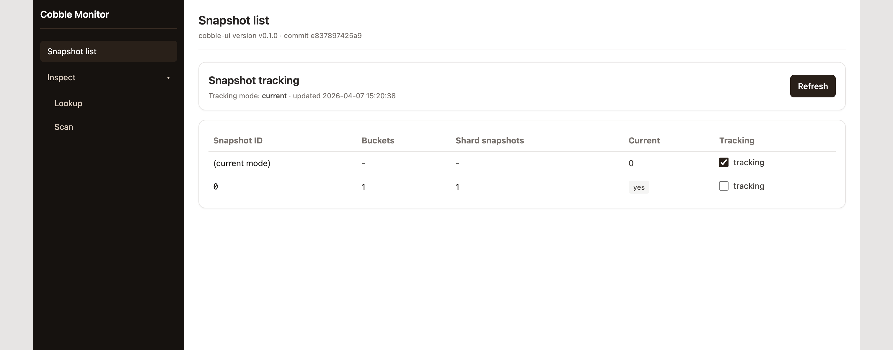
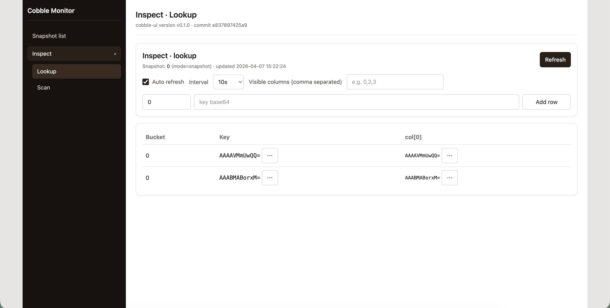
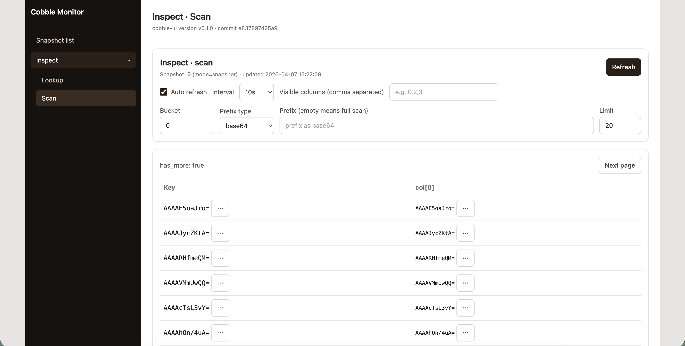

Web Monitor
The web monitor is a read-only inspection service built on top of Reader. It provides:
- a browser UI for snapshots and key inspection,
- and lists all snapshots and current pointer, with the ability to switch between tracking the current snapshot or a fixed snapshot ID.
Start via CLI
cobble-cli web-monitor --config ./config.yaml --bind 127.0.0.1:8080
Then open http://127.0.0.1:8080/.
Embed in Rust
use cobble_web_monitor::{MonitorConfig, MonitorConfigSource, MonitorServer};
let mut server = MonitorServer::new(MonitorConfig {
source: MonitorConfigSource::ConfigPath("./config.yaml".to_string()),
bind_addr: "127.0.0.1:8080".to_string(),
global_snapshot_id: None, // None = follow current global snapshot
..MonitorConfig::default()
})?;
let handle = server.serve()?;
println!("monitor at {}", handle.base_url());
UI showcase
Snapshot list and pointer tracking
You can choose to track the current global snapshot (default) or a fixed snapshot ID. The list shows all snapshots with their IDs and metadata.

Lookup
You can perform key lookups against the tracked snapshot.

Scan
You can perform range scans with optional prefix filtering.

UI Build Notes
cobble-web-monitor embeds frontend assets during build. For backend-only builds:
COBBLE_WEB_MONITOR_SKIP_UI_BUILD=1 cargo build -p cobble-web-monitor
In this mode APIs still work; UI serves a fallback page.